Two test families exist for a reason — binary outcomes need a two-proportion z-test, continuous measurements need Welch’s t-test. The diagram shows how each computes its p-value, and the one line (bool(p_value < 0.05)) that decides everything downstream.

| Node | Location | What it does |
|---|---|---|
| DATATYPE | stats_harness.py (caller's choice) | Not an automatic branch in the code — the caller picks which function to call based on their data shape. Binary (converted/didn't) → two_proportion_z_test(); continuous (a measurement) → welch_t_test(). |
| ZCALC | stats_harness.py:two_proportion_z_test() | Pools both arms' successes to compute a shared standard error, then a z-statistic — the standard formula for comparing two proportions. |
| TCALC | stats_harness.py:welch_t_test() | Delegates to scipy.stats.ttest_ind(..., equal_var=False) — the equal_var=False is what makes this Welch's test, not Student's, correctly not assuming the two groups have equal variance. |
| SIGCHECK | stats_harness.py (both functions) | bool(p_value < 0.05) — the explicit bool() wrapper exists because a bare numpy bool caused a real test failure (np.True_ is True evaluates False) before this fix. |
| EDGECASE | stats_harness.py:welch_t_test() | Zero-variance identical samples make the t-test's denominator zero, producing nan. Because nan < 0.05 evaluates to False in Python, this degrades safely to "not significant" rather than crashing or falsely claiming an effect. |
A true 7.4% relative lift baked into 50,000 simulated users per arm is correctly recovered and called significant (p=0.00002) — the z-test doing exactly what it's for.
DATATYPE(Binary) → ZTEST → ZCALC → ZP(0.00002) → SIGCHECK(True) → SIGRESULT8 samples per model, one cold-start outlier dominating each — the t-test correctly refuses to call it significant (p=0.499) despite the raw numbers looking dramatic.
DATATYPE(Continuous) → TTEST → TCALC → TP(0.499) → SIGCHECK(False) → NOTSIGRESULTAn edge case that could crash a naive implementation instead safely resolves to "not significant" via Python's nan comparison semantics.
TTEST → TCALC(nan) → EDGECASE(Yes) → NANSAFE